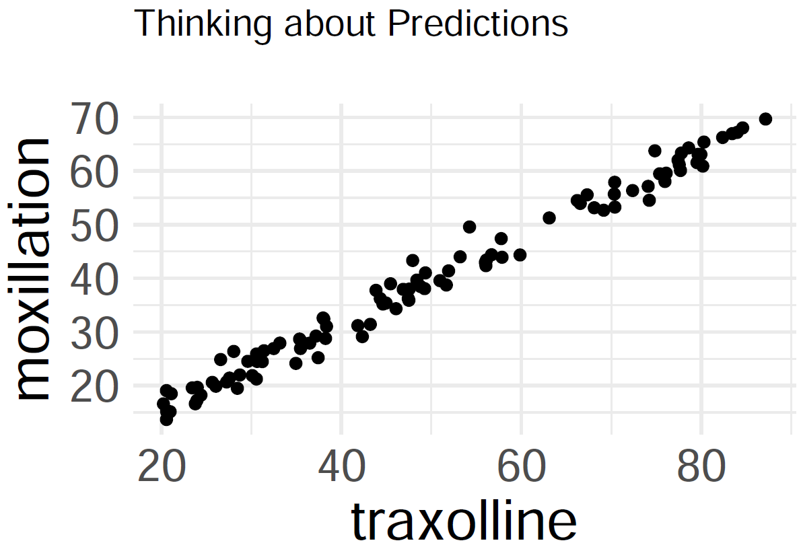

Today: Linear Regression
Goal: Summarize bivariate data
Objectives:
- determine a best-fit line from a bivariate data set
- make predictions based on a linear regression model
Moxillation

Query: predict how much moxillation will take place at 70 traxolline.
Residuals
Goal: Given a bivariate data set \(\{x_{i}, y_{i}\}_{i=1}^{n}\), form a linear regression model
\[\hat{y} = a + bx\]
that ``best fits’’ the data. Note that such a line will not go through all of the data (except in linear, deterministic situations), so
- denote \(y_{i}\) for true outcomes
- denote \(\hat{y}_{i}\) for estimates (or predictions)
- then \(y_{i} - \hat{y}_{i}\) is the \(i^{\text{th}}\) residual
Method of Least Squares
Like our derivation of formulas for variance and standard deviation, scientists decided to square the residuals (focus on size of residuals, avoid positive versus negative signs). Let the total error be
\[E(a,b) = \displaystyle\sum_{i = 1}^{n} (y_{i} - \hat{y}_{i})^{2} = \displaystyle\sum_{i = 1}^{n} (y_{i} - a - bx_{i})^{2} \]
- The ``best-fit line’’ minimizes the error.
- To minimize the error, start by setting the partial derivatives equal to zero:
\[\displaystyle\frac{\partial E}{\partial a} = 0, \quad \displaystyle\frac{\partial E}{\partial b} = 0\]
Thankfully, the function \(E(a,b)\) is an elliptical paraboloid, so there is a global minimum at the critical point, and that minimum is found where
\[a = \displaystyle\frac{ (\sum y_{i})(\sum x_{i}^{2}) - (\sum x_{i})(\sum x_{i}y_{i}) }{ n\sum x_{i}^{2} - (\sum x_{i})^{2} }, \quad b = \displaystyle\frac{ n\sum x_{i}y_{i} - (\sum x_{i})(\sum y_{i}) }{ n\sum x_{i}^{2} - (\sum x_{i})^{2} }\]
If sample means \(\bar{x}\) and \(\bar{y}\), sample standard deviations \(s_{x}\) and \(s_{y}\), and correlation coefficient \(r\) were previously computed, then the best-fit linear regression line \(\hat{y} = mx + b\) is computed with
\[m = \displaystyle\frac{ rs_{y} }{ s_{x} }, \quad b = \bar{y} - m\bar{x}\]
- If correlation \(r > 0\), then the slope of the regression line is also positive
- If correlation \(r < 0\), then the slope of the regression line is also negative
In a scatterplot, an outlier is a point lying far away from the other data points. Paired sample data may include one or more influential points, which are points that strongly affect the graph of the regression line.
Estimators for the Coefficients
Claim: Treating \(Y\) as a random variable for the true outcomes, the least-squares estimators
\[A = \displaystyle\frac{ (\sum Y_{i})(\sum x_{i}^{2}) - (\sum x_{i})(\sum x_{i}Y_{i}) }{ n\sum x_{i}^{2} - (\sum x_{i})^{2} }, \quad B = \displaystyle\frac{ n\sum x_{i}Y_{i} - (\sum x_{i})(\sum Y_{i}) }{ n\sum x_{i}^{2} - (\sum x_{i})^{2} }\]
are unbiased estimators of \(a\) and \(b\) respectively.
Proof: We need to show that the expected values \(\text{E}[A] = a\) and \(\text{E}[B] = b\)
\[\begin{array}{rcl} \text{E}[B] & = & \displaystyle\frac{ n\sum x_{i}\text{E}[Y_{i}] - (\sum x_{i})(\sum \text{E}[Y_{i}]) }{ n\sum x_{i}^{2} - (\sum x_{i})^{2} } \\ ~ & = & \displaystyle\frac{ n\sum x_{i}(a + bx_{i}) - (\sum x_{i})[\sum (a + bx_{i})] }{ n\sum x_{i}^{2} - (\sum x_{i})^{2} } \\ ~ & = & \displaystyle\frac{ n\sum x_{i}(a + bx_{i}) - (\sum x_{i})(na + b\sum x_{i}) }{ n\sum x_{i}^{2} - (\sum x_{i})^{2} } \\ ~ & = & \displaystyle\frac{ an\sum x_{i} + bn\sum x_{i}y_{i} - an\sum x_{i} + b(\sum x_{i})^{2} }{ n\sum x_{i}^{2} - (\sum x_{i})^{2} } \\ ~ & = & \displaystyle\frac{ b[n\sum x_{i}^{2} - (\sum x_{i})^{2}] }{ n\sum x_{i}^{2} - (\sum x_{i})^{2} } \\ \end{array}\]We have shown that expected value \(\text{E}[B] = b\), so \(B\) is an unbiased estimator of \(b\).
Then,
\[\begin{array}{rcl} \text{E}[A] & = & \text{E}[\bar{Y}_{n}] - \text{E}[B]\bar{x} \\ ~ & = & \displaystyle\frac{1}{n}\displaystyle\sum_{i=1}^{n} \text{E}[Y_{i}] - b\bar{x} \\ ~ & = & \displaystyle\frac{1}{n}\displaystyle\sum_{i=1}^{n} (a + bx_{i}) - b\bar{x} \\ ~ & = & a + b\bar{x} - b\bar{x} \\ \end{array}\]We have shown that expected value \(\text{E}[A] = a\), so \(A\) is an unbiased estimator of \(a\).
Estimator for the Variance
- this slide is optional (i.e. not on exams)
But can we estimate the population variance \(\sigma_{y}^{2}\) without knowing the relationship between \(x\) and \(y\)?
Starting with the average of the squared residuals,
\[R_{n}^{2} = \displaystyle\frac{1}{n}\displaystyle\sum_{i=1}^{n} (Y_{i} - a - bx_{i})^{2}\]
it can be computed that expected value \(\text{E}[R_{n}^{2}] = \displaystyle\frac{n-2}{n}\sigma_{y}^{2}\)
Rescaling,
\[S_{n}^{2} = \displaystyle\frac{1}{n-2}\displaystyle\sum_{i=1}^{n} (Y_{i} - a - bx_{i})^{2}\]
is an unbiased estimator of the population variance \(\sigma_{y}^{2}\)
Predictions
Finally, with a linear regression model \(\hat{y} = a + bx\) in place, plug in a data value \(x\) to form a prediction \(\hat{y}\)
The table below displays data for enrollment levels at UC Merced between the years 2011 and 2016.
If the enrollment numbers are \(\{x_{i}\}\) data, then the sample mean is \(\bar{x} = 6240.5\) students and the sample standard deviation is \(s_{x} = 737.3091\) students. If the drug abuse violations are \(\{y_{i}\}\) data, then the sample mean is \(\bar{y} = 22.5\) violations and the sample standard deviation is \(s_{y} = 9.7108\) violations. Finally, the correlation coefficient is \(r \approx 0.0471\).
- Find the best-fit linear regression line in the \(\hat{y} = mx + b\) form.
- What does the regression model predict for the number of drug abuse violations for the year 2017 enrollment of 7967 students?
- What does the regression model predict for the enrollment if there are 36 drug abuse violations reported?

Joyce Byers notices that magnets are falling off the shelves. She consults the kids’ science teacher Mr. Clarke. Suppose that they conduct an investigation where they strength of magnetic fields versus the distance from Joyce’s house and then record the amounts (in the table below). Let us treat the distances as the \(\{x_{i}\}\) data and the magnetic flux density as the \(\{y_{i}\}\) data. Joyce fortunately has a ``scientific calculator’’ from the government lab, and she calculates the sample means of \(\bar{x} = 15\) miles and \(\bar{y} \approx 8.9999\) teslas. Mr. Clarke then calculates sample standard deviations of \(s_{x} \approx 1.9850\) and \(s_{y} \approx 1.3742\) along with a correlation of \(r \approx 0.9630\). Build a linear regression model to predict the magnetic flux density when they are 18 miles away from Joyce’s house.
Looking Ahead
Upcoming
- LHW9
- LHW10
Final Exam will be on Dec. 8
- more information in weekly announcement